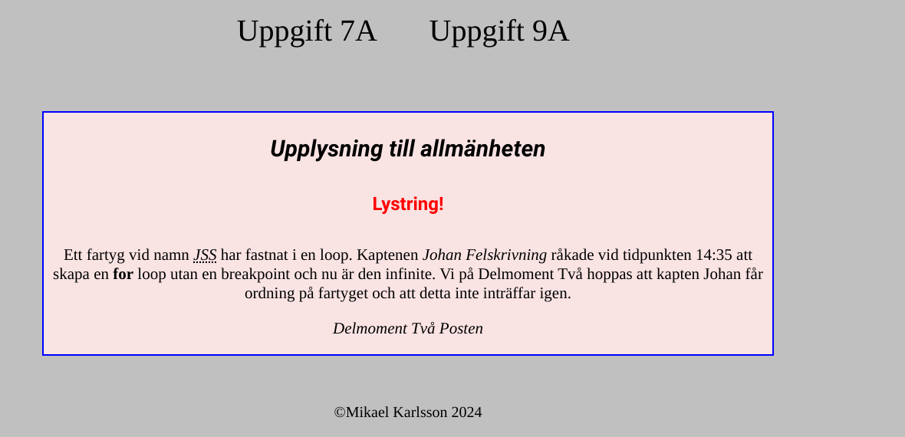
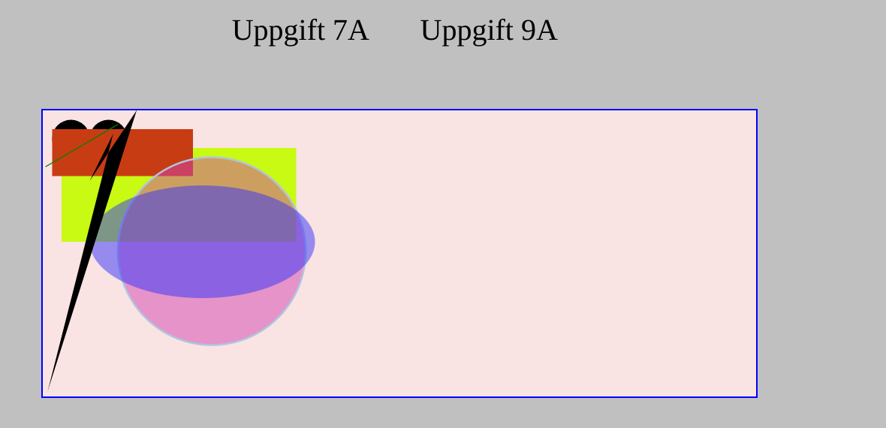
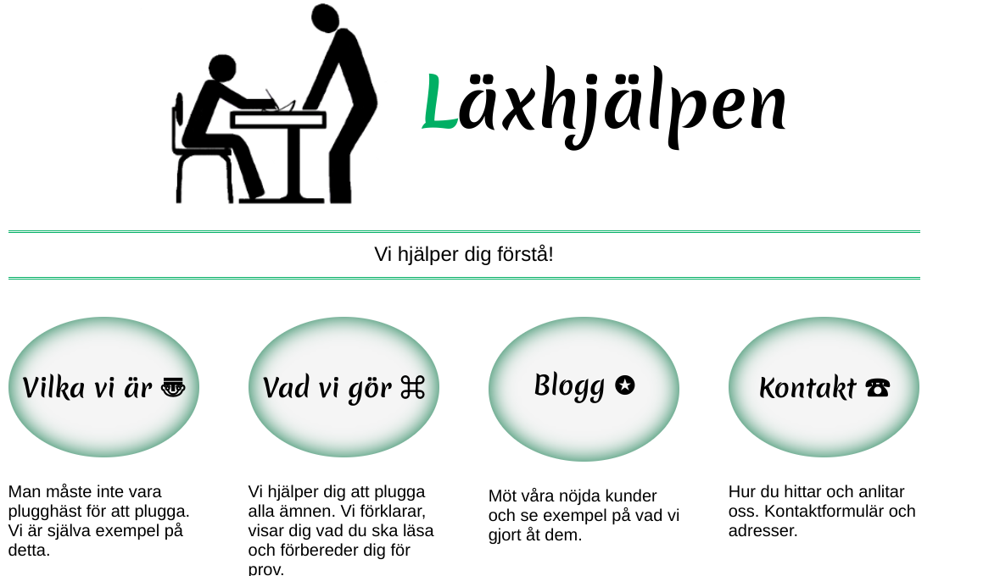
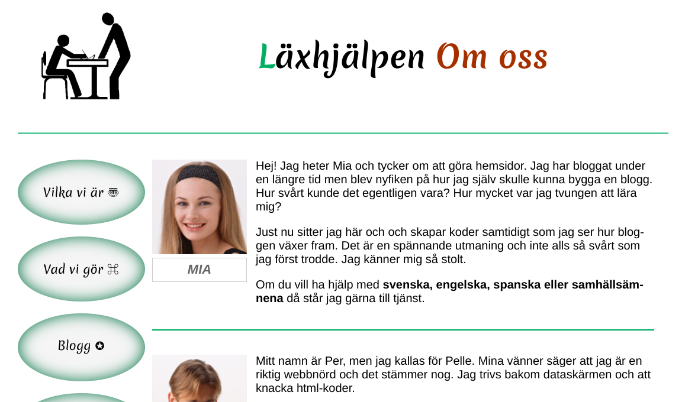
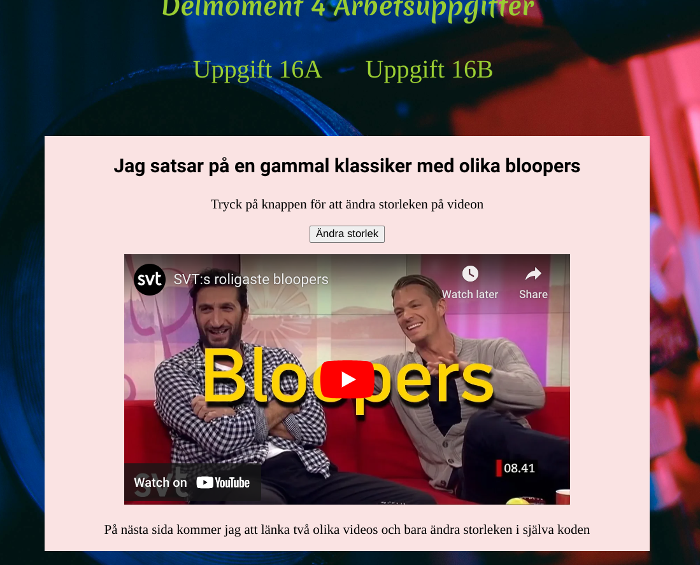

I Delmoment 1 fick vi lära oss grundläggande webbteknik och en lätt introduktion till grundläggande HTML/CSS
Det jag tyckte var mest intressant var hanteringen av Git och Github. Jag tyckte boken gav ett bra första steg och tydlig riktning så jag också kunde starta med Git hantering. Här har jag flera projekt som är gjorda med Git, inkl Läxhjälpen
Jag gjorde även en inlämning med placering, färg och olika typsnitt på text. Det var givande och roligt att klara av utan några större problem!
Delmoment 2 så började det deep-divea mer in i HTML och CSS. Första uppgiften handlade om att göra en text med abbr, strong och i osv. Jag har inte jobbat så mycket med olika semantik i text, så det var väldigt intressant.
Jag hade också roligt med uppgiften som innehöll SVG, det var ett främmande koncept som jag inte hade testat innan. Jag ser många möjligheter att använda det i framtiden för olika projekt så det ska jag verkligen lära mig mer om. Såhär såg mina projekt ut:  
Jag använde samma mall och gjorde båda mina uppgiften som en "hemsida" vilket jag tyckte var en rolig idé.
Delmoment 3 var mitt absoluta favoritprojekt. Jag tyckte det var väldigt roligt att följa instruktionerna och skapa en hemsida med flexbox. Jag hade redan mycket grundkunskap inom just flexbox och CSS men fick även bekanta mig mer med flex-basis som jag använt i dessa kolumner. Skulle säga att Läxhjälpen är ett perfekt projekt att testa på och lära sig mer avancerad webbutveckling.
I boken så fortsatte det med lite mera avancerade grejer som listor, formulär och mobilwebb. Jag skulle säga att mobil-webb är det som är mest relevant just nu eftersom det känns mer vanligt än en dator, så gäller nästan att bygga en hemsida som en mobilhemsida och justera för just dator.
 Lite bilder på min Läxhjälpen hemsida.
I Delmoment 4 var det dags för prov! Jag hade inte mycket tid att studera tyvärr men jag gjorde mitt bästa, min grundkunskap jag fått innan denna kurs samband med att jag läst igenom boken gjorde att jag klarade mig! :D
Delmoment 4 hade vi också en inlämningsuppgift där man skulle använda sig av iframe och länka videos från Youtube och Vimeo. Jag fick en idé om att automatiskt förstora/minska med Javascript och blev nöjd med resultatet. Det var ett väldigt basic script jag hittade på internet och gjorde lite egna ändringar med te.x variabel namnet let och la till lite annan id osv. Här är en liten förhandsvisning på det: 
Delmoment 5 är sista delmomentet, via lektionsanvisningen får vi lära oss mer och säkerhet och tillgänglighet.
Detta projektet som du just nu läser är det jag älskar att göra, formgiva hemsidor och skapa en användarvänlig och intressant webpage. Jag ska efter denna kursen hoppa in på Javascript och sen köra all-in på React. Backend är även något som jag vill lära mig lite för att skapa log-in system och skapa APIer osv. Mest intressanta med Delmoment 5 var att lära sig om GDPR och hur det påverkar yrket som gränssnittsutvecklare.